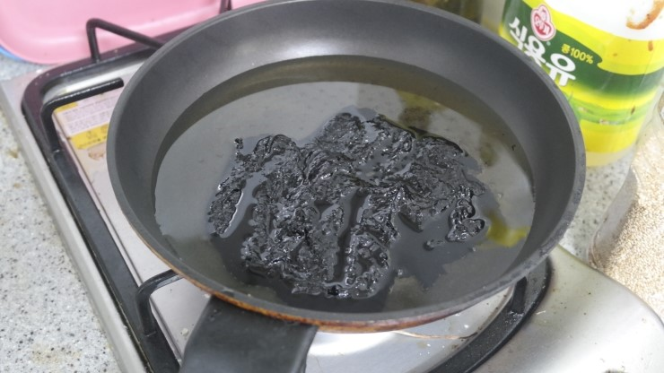
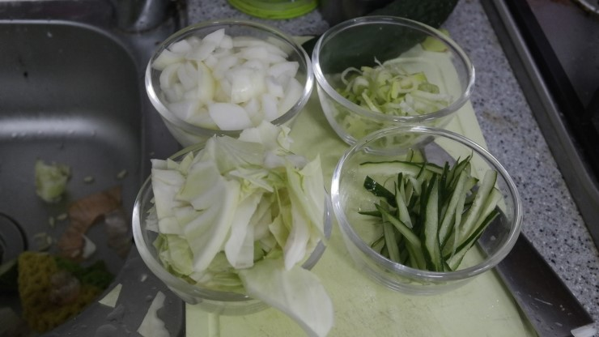
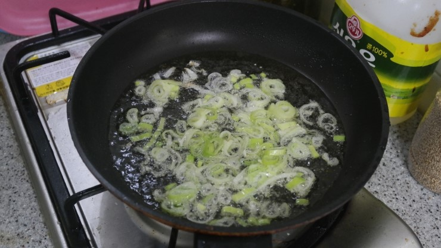
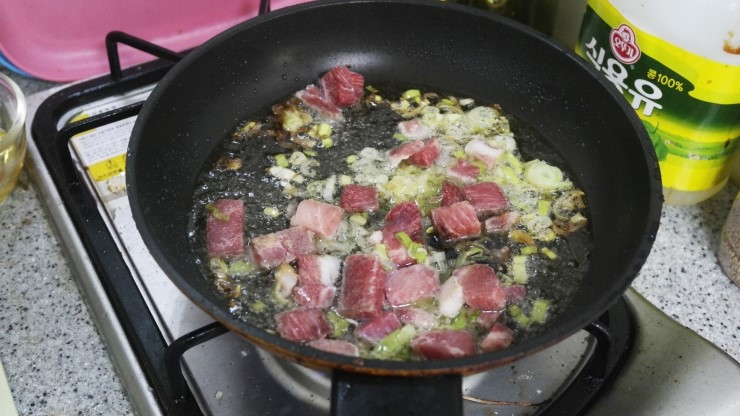
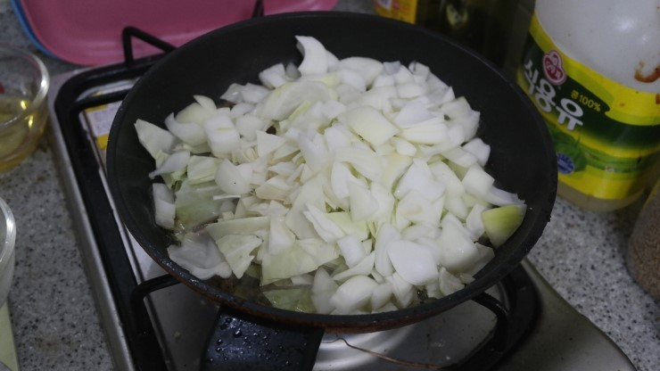
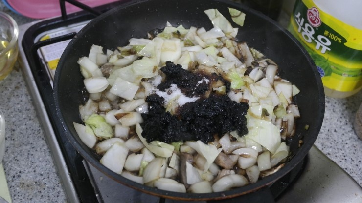
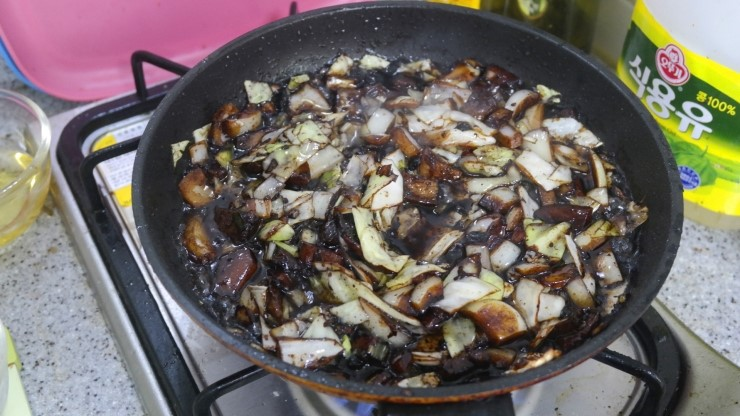
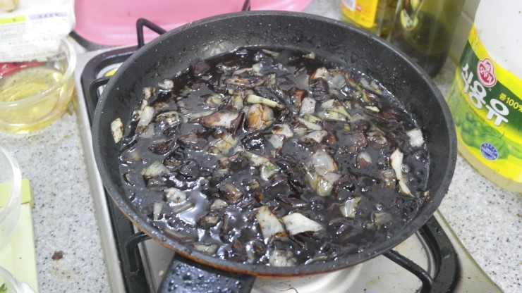
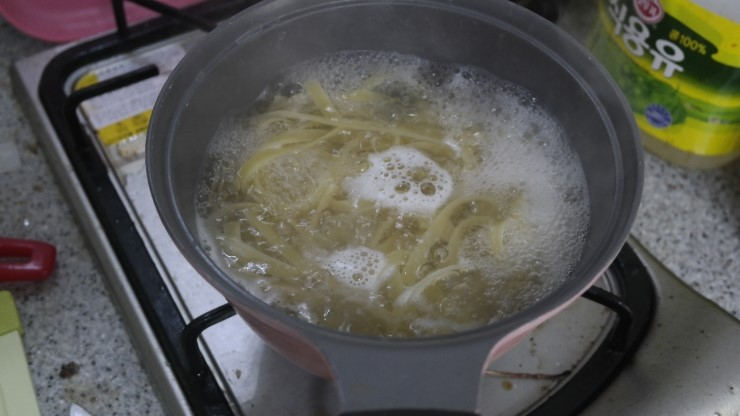

짜장면
집밥백선생의 짜장면 레시피를 보고 만들었습니다.
조리시간 : 30분 이내
재료
- 재료
양파 1개
양배추 1/5개
돼지고기 200g
오이 1/3개
파 2줄기
파스타면 2인분
- 양념
춘장 1/3컵
설탕 1T
물전분 3T
조리 순서
| 1. 후라이팬에 식용유 2컵을 붓고 춘장 1봉지를 넣고 기름에 춘장을 튀겨줍니다. |  |
| 2. 짜장면 야채를 준비합니다. 오이는 돌려깎이해서 채썰고(고명용) 양배추와 양파는 큼직큼직 썰어주고 파는 잘게 잘게 썰어서 준비합니다. |  |
| 3. 불을 켜지 않은 후라이팬에 식용유를 붓고 파를 넣고 볶아서 파기름을 내줍니다. |  |
| 4. 파기름이 얼추 나면 잘게 썰어 놓은 돼지고기를 넣고 볶아줍니다. |  |
| 5. 고기가 익으면 오이를 제외한 양배추와 양파를 넣고 볶아줍니다. |  |
| 6. 튀긴 춘장을 1/3컵 정도 넣고 설탕 1T를 넣고 볶아줍니다. |  |
| 7. 춘장이 야채와 고루 섞이게 볶아줍니다. 이때 먹으면 흔히보던 간짜장이 됩니다. |  |
| 8. 물을 재료가 자박자박 할때까지 넣어줍니다. 끓여 주다가 물 : 전분 = 3 : 1로 타준 전분물로 짜장의 농도를 걸쭉하게 만들어 줍니다. |  |
| 9. 중화면을 대체하기 위한 파스타 면을 소금 1T를 넣고 2인분 정도 13분 삶아 줍니다. 면이 익으면 그릇에 면을 셋팅하고 위에 짜장을 부어주고 오이 고명을 올려주면 완성! |  |